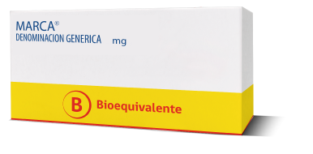

Un Bioequivalente es un medicamento que ha comprobado mediante estudios científicos, que tiene el mismo efecto que el producto farmacéutico original. Su eficacia está certificada por el Instituto de Salud Pública.
Podrás reconocerlos fácilmente mediante un sello de color amarillo en su empaque, presente en al menos 4 de sus 6 caras.

Los medicamentos Bioequivalentes son mucho más económicos.
Más información sobre medicamentos Bioequivalentes